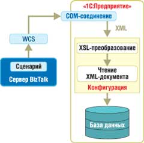
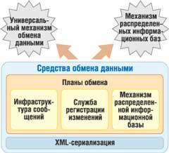
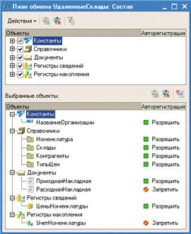
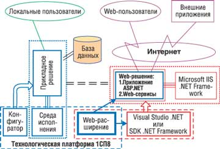
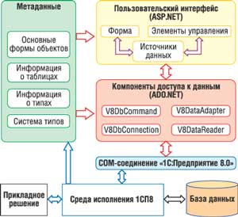

Андрей Колесов
Задачи создания и развития автоматизированных систем управления сегодня все в большей степени увязываются с вопросами интеграции отдельных подсистем и компонентов корпоративной информационной системы. Поэтому неудивительно, что расширение функциональных и технологических возможностей базовых платформ для создания решений масштаба предприятия в последние годы во многом идет в направлении интеграции. Более того, в арсенале ведущих поставщиков ERP-систем корпоративного уровня появились соответствующие специализированные продукты (например, SAP NetWeaver и InterSystems Ensemble), которые - и это отчетливо просматривается - постепенно становятся центральным, ключевым элементом всего комплекса поставляемых продуктов.
Расширение сферы текущих и потенциальных интересов ведущего российского игрока на поле автоматизации управления предприятиями, фирмы "1С" (http://www.1c.ru), также идет за счет существенного усиления интеграционных средств, реализуемых в первую очередь на платформенном уровне, а затем уже в прикладных решениях. Выпущенная немногим более полутора лет назад и динамично развивавшаяся все это время платформа "1С:Предприятие 8.0" (1СП8) на сегодня обладает широким спектром функций и механизмов взаимодействия с внешними программами и оборудованием на основе общепризнанных открытых стандартов и протоколов (см. таблицу).
Средства и механизмы интеграции в "1С:Предприятие 8.0"
| Функция | Назначение |
| Работа с текстовыми документами | Встроенный язык 1СП8 позволяет разработчику создавать, динамически формировать и записывать текстовые документы, в том числе на основе готовых шаблонов. Обмен данными с использованием текстовых документов - один из самых простых способов взаимодействия с другими системами. Работа с текстовыми файлами важна и в плане формирования отчетов с использованием недавно появившегося механизма применения макетов форм. Для этого у разработчика существует специальный редактор текстов |
| Последовательное чтение текстовых файлов | Имеются специальные функции анализа содержимого вводимых файлов, в том числе с использованием разных кодовых таблиц символов |
| XML | 1СП8 позволяет организовать интеграцию с прикладными системами с использованием XML-документов - общепринятого сегодня средства представления данных. Поддержка XML выполнена на уровне встроенного языка |
| DBF-файлы | Механизм работы с базами данных формата DBF предназначен для манипулирования ими непосредственно из встроенного языка системы 1СП8 через объект xBase. Можно как работать с существующими базами данных, так и создавать новые БД произвольной конфигурации |
| COM-соединение | Основная его задача - обеспечить надежный и быстрый программный доступ к данным системы 1СП8 из внешних приложений. В целом работа с 1СП8 через COM-соединение подобна работе в режиме Automation-сервера |
| Automation Client/Server | Назначение Automation-сервера - управление прикладным решением из других приложений и выполнение действий, аналогичных интерактивным действиям |
| Работа с HTML-документами | Средства работы с HTML-документами позволяют встраивать их в формы прикладного решения и редактировать средствами встроенного языка |
| Работа с файловой системой | Доступ к функциям работы с файловой системой реализован на уровне встроенного языка. Эта возможность полезна при организации взаимодействия с другими информационными системами через общие каталоги |
| Технология внешних компонентов | Позволяет создавать программы, которые будут динамически подключаться и тесно взаимодействовать с системой 1СП8. Для разработки компонентов подходит любой инструмент, поддерживающий стандарты COM (Visual Studio, Delphi и т. п.) |
| Элементы управления ActiveX | 1СП8 позволяет внедрять в формы и табличные документы дополнительные элементы управления, поддерживающие технологию ActiveX |
| Макеты ActiveDocument | Технология ActiveDocument предназначена для редактирования документов внешними по отношению к 1СП8 редакторами |
| Работа с Интернетом | Ведется непосредственно из встроенного языка. Разработчик может отправлять и принимать электронную почту (как посредством установленного на компьютере встроенного клиента, так и без него), а также выполнять обмен данными по протоколам HTTP (HTTPS) и FTP |
| Web-расширение | Отдельный программный продукт, позволяющий встраивать доступ к данным 1СП8 в существующие сайты и Web-приложения, создавать готовые Web-приложения, использующие информационную базу 1СП8 |
| Обмен данными | Механизмы обмена данными в платформе 1СП8 позволяют создавать территориально распределенные системы на основе как информационных баз 1СП8, так и других прикладных решений |
Тут сразу нужно отметить, что все эти средства явно неравноценны и решают задачи интеграции разного уровня. Однако в этой связи хотелось бы подчеркнуть, что проблемы интеграции существуют не только у крупных корпораций, но и у небольших фирм, причем, естественно, суть этих проблем и методы их решения имеют свою специфику. Вполне понятно, что компания "1С", работая на массовом рынке, должна поддерживать широкий набор решений.
Еще один специфический момент заключается в том, что к проблематике интеграции "1C" относит также задачи взаимодействия приложений внутри собственного семейства экономического ПО. Это также вполне понятно, и здесь можно выделить два момента.
Во-первых, на практике формирование информационных систем предприятий идет, как правило, по принципу "снизу-вверх" и путем автоматизации отдельных участков работы. Определенные же сложности при взаимодействии даже однородных решений возникают из-за существенных различий в их настройках, использования специфических функциональных расширений и т. д. Другими словами, развитые возможности адаптации продукта к конкретному участку автоматизации создают определенные препятствия на пути интеграции.
Во-вторых, все чаще возникают задачи создания сложных распределенных систем. Более того, в силу специфики архитектуры самой платформы "1С:Предприятие 8.0" и схем организации реального бизнеса заказчиков, "1С" особое внимание в своих технологиях уделяет поддержке децентрализованных моделей информационных систем.
В целом средства и механизмы интеграции "1С:Предприятие 8.0" позволяют решать следующие основные задачи:
- создавать, обрабатывать данные разных форматов и обмениваться ими;
- предоставлять доступ ко всем функциональным объектам системы "1С:Предприятие 8.0";
- поддерживать различные протоколы обмена;
- поддерживать стандарты взаимодействия с другими подсистемами;
- разрабатывать собственные Интернет-решения.
Тем не менее, как мы уже не раз отмечали ранее, основной вектор развития технологий "1С:Предприятие 8.0" связан с повышением масштаба и сложности реализуемых проектов. Именно поэтому здесь мы детально рассмотрим только возможности интеграции, появившиеся впервые и нацеленные на создание систем среднего и крупного уровня*.
* Проблематика интеграции включает и такой важный аспект, как обеспечение взаимодействия людей и бизнес-процессов. На решение этих задач нацелен механизм управления бизнес-процессами, реализованный в выпуске "1С:Предприятие" 8.0.10. Подробнее о нем см. "Автоматизация бизнес-процессов в "1С:Предприятие 8.0", "BYTE/Россия" № 3'2005.
COM-соединения и Automation
Технологии COM-соединений и Automation используются в "1С:Предприятии" еще со времен версии 7.0, но о них стоит здесь сказать подробнее, так как они (особенно COM-соединения) играют ключевую роль в обеспечении взаимодействия "1С:Предприятие 8.0" с внешними приложениями через стандартный механизм Microsoft COM.
В целом работа COM-соединения (рис. 1) подобна режиму Automation-сервера (используются одни и те же системные программные интерфейсы), но есть и важные отличия. Во-первых, в случае Automation-сервера запускается полноценное приложение "1С:Предприятие 8.0", а в случае COM-соединения - относительно небольшой внутрипроцессный COM-сервер. Во-вторых, при работе через COM-соединение недоступны функциональные возможности, так или иначе связанные с организацией пользовательского интерфейса системы "1С:Предприятие 8.0". И наконец, COM-соединения не используют модуль приложения конфигурации "1С:Предприятие 8.0", его роль выполняет модуль внешнего соединения.
|  | Рис. 1. Используя COM-соединение и средства работы с XML, можно организовать интеграцию с прикладными системами по принятым в них форматам.
|
В то же время COM-соединения имеют преимущества по сравнению с Automation-сервером:
- более быстрая установка соединения, так как не требуется создавать отдельный процесс ОС, а все действия выполняются в рамках вызывающего процесса;
- более быстрое обращение к свойствам и методам объектов системы "1С:Предприятие 8.0", так как для этого не требуется организовывать межпроцессные коммуникации;
- меньший расход ресурсов ОС.
Основное назначение Automation-сервера - управление прикладными решениями "1С:Предприятие 8.0" из других приложений и выполнение действий, аналогичных интерактивным действиям. Он предоставляет доступ ко всем свойствам и методам своего глобального контекста, имеет дополнительные свойства и методы для выполнения действий, специфичных для работы в режиме Automation. Как и многие другие современные программные продукты, "1С:Предприятие 8.0" может выступать в роли клиента Automation. Поэтому из системы можно обращаться к другой копии "1С:Предприятие 8.0" (например, к другой конфигурации) для обмена данными.
Обмен данными
Механизмы обмена данными позволяют создавать распределенные информационные системы на основе "1С:Предприятие 8.0" и других информационных систем. Они реализуются за счет ряда средств технологической платформы, которые разработчик может применять как по отдельности, так и в различных комбинациях, в зависимости от конкретной задачи (рис. 2). Такой подход обеспечивает гибкость механизмов обмена и возможность их настройки на решение как можно большего круга задач. В состав средств платформы, используемых для построения схем обмена данными, входят объекты "План обмена", средства XML-сериализации и средства чтения/записи XML-документов.
|  | Рис. 2. Архитектура механизмов обмена данными в "1С:Предприятие 8.0".
|
Планы обмена содержат информацию об узлах, которые могут участвовать в обмене данными, определяют состав информации и указывают, следует ли задействовать механизм распределенной информационной базы при обмене (рис. 3). В одном прикладном решении может существовать несколько планов обмена, каждый из которых описывает свой порядок обмена данными. Например, если выполняется обмен данными с удаленными складами и удаленными офисами, то, скорее всего, будет существовать два плана обмена (один для складов, другой - для офисов), поскольку состав данных, предназначенных для обмена со складами, будет значительно "уже", чем у данных для обмена с офисами.
|  | Рис. 3. Описание плана обмена в "1С:Предприятие 8.0".
|
XML-сериализация - это процесс преобразования данных "1С:Предприятие 8.0" в последовательность данных формата XML и наоборот. Средства чтения и записи XML-документов позволяют работать с XML-данными без привязки к объектам "1С:Предприятие 8.0". В частности, они позволяют открывать XML-документы для чтения, получать из них данные, создавать новые XML-документы и записывать в них данные.
При помощи этих средств можно реализовать две основные технологии: универсальный механизм обмена данными (УМОД) и механизм распределенных информационных баз (МРИБ).
УМОД предназначен для создания территориально распределенных систем на основе "1С:Предприятие 8.0" и решений. Однако этот механизм позволяет переносить только данные, перенос конфигурации и административной информации "1С:Предприятие 8.0" с его помощью невозможен. Формат обмена - XML-документы, при обмене данными между информационными базами "1С:Предприятие 8.0" не накладывается ограничений на идентичность конфигурации и структуры конкретных объектов. В то же время в одной конфигурации можно создать несколько независимых схем обмена с различными информационными системами. Важно также, что при организации схемы обмена не накладывается ограничений на структуру распределенной системы: можно организовать как классическую структуру типа "звезда", так и более сложные многоуровневые структуры типа "снежинка" и другие.
МРИБ играет ключевую роль в создании территориально распределенных систем на основе идентичных конфигураций "1С:Предприятие 8.0" (распределенная система должна иметь древовидную структуру, в которой существует корневой узел и определено отношение "главный - подчиненный" для каждой пары связанных узлов). Данная технология обеспечивает регистрацию изменений в базах данных, инфраструктуру сообщений и обмен информацией в формате XML. Для централизованного управления конфигурацией системы существуют визуальные средства. С помощью МРИБ выполняется не только обмен данными, но и перенос программной конфигурации и административной информации. Основные возможности МРИБ таковы:
- интерактивное создание распределенной системы и обмен данными без дополнительного программирования;
- обеспечение идентичности конфигураций информационных баз, входящих в состав распределенной системы;
- подключение новых и отключение существующих узлов;
- создание начального образа информационной базы для нового узла;
- реализация способов разрешения коллизий при одновременном изменении данных в разных узлах распределенной системы;
- создание нескольких схем обмена в рамках одной распределенной информационной базы;
- распределенная информационная база может содержать схемы обмена с другими информационными системами, в том числе с информационными базами "1С:Предприятие", не являющимися распределенными;
- задание условий на передачу и прием изменений на уровне отдельных элементов данных;
- восстановление обмена данными в случаях восстановления информационных баз с резервных копий и т. д.;
- сжатие сообщений обмена в формате .ZIP и автоматическая их распаковка при приеме.
Структура распределенной информационной базы описывается при помощи объекта "План обмена", в котором отражаются набор узлов и состав данных. Кроме того, планы обмена реализуют три механизма, задействованные в распределенной информационной базе.
Основной механизм распределенных информационных баз. Предоставляет интерактивные и программные средства обмена в распределенной информационной базе, в том числе на основе других средств обмена данными, таких, как служба регистрации изменений, инфраструктура сообщений, XML-сериализация и чтение/запись XML-документов.
Служба регистрации изменений. Позволяет получать информацию о том, какие элементы данных были изменены и в какой узел обмена их следует передать.
Инфраструктура сообщений. Перенос данных между узлами распределенной информационной базы выполняется с помощью сообщений, которые поддерживаются инфраструктурой сообщений. Каждое сообщение относится к определенному плану обмена, имеет определенный узел-отправитель, узел-получатель и целочисленный номер.
Создание Web-приложений
Особое положение технологии создания Web-приложения в "1С:Предприятие 8.0" заключается в том, что это не просто внутренний механизм платформы, а самостоятельный продукт - "1С:Предприятие 8.0. Web-расширение 1.0" (1СП8-Web), инструментальное средство для организации взаимодействия Интернет-пользователей с прикладными решениями на базе "1С:Предприятие 8.0" (рис. 4).
|  | Рис. 4. Web-расширение в системе "1С:Предприятие 8.0".
|
Возможность клиентского Web-доступа к приложениям "1С:Предприятие" появилась только весной 2000 г., когда был выпущен компонент "Web-расширение" для платформы версии 7.7 (см. "Разработка Web-приложений для "1С:Предприятия", "BYTE/Россия" № 4'2001). В нем была использована технология ASP, позволяющая писать код активных страниц на внутреннем языке 1С:V7Script. Однако вся разработка ASP-страниц должна была выполняться исключительно "руками", без каких бы то ни было специальных средств. Очевидно, что такие дедовские методы были непригодны для создания сложных Web-приложений и могли применяться лишь в ограниченных масштабах. Тем не менее с помощью этого варианта Web-расширения целый ряд компаний-разработчиков не только получал собственные продукты, но и реализовывал некоторые проекты и тиражируемые решения.
Нынешний вариант Web-расширения - это качественно более мощный (по сравнению с 7.7) инструмент, позволяющий решать довольно широкий круг задач, связанных с использованием Интернет-технологий, - начиная от обеспечения клиентского Web-доступа и заканчивая интеграцией с внешними приложениями.
В основе концепции 1СП8-Web лежит стандартная технология создания приложений ASP.NET, дополненная программными компонентами "1С:Предприятие 8.0", которые обеспечивают, с одной стороны, привычный для пользователя системы клиентский интерфейс, а с другой - взаимодействие с базой данных и с функционалом прикладного решения.
Пользовательский интерфейс и бизнес-логика создаются в рамках технологии ASP.NET (приложение типа Web Forms). Для программирования разрешается применять любой .NET-язык, сами авторы 1СП8-Web рекомендуют C# (демонстрационный пример, шаблоны и конструкторы ориентированы на этот язык).
Одна из целей 1СП8-Web - повысить эффективность разработки Web-приложений в среде Visual Studio .NET с учетом специфики прикладных решений семейства "1С:Предприятие 8.0". Большинство компонентов 1СП8-Web, реализованных в виде элементов управления, предназначено именно для решения этой задачи: они позволяют строить пользовательский интерфейс и обрабатывать данные в традиционном стиле системы "1С:Предприятие". При этом разработчик может самостоятельно создавать Web-формы или использовать те, которые автоматически генерируются системой на основе структуры прикладного решения "1С:Предприятие 8.0". Во втором случае обеспечивается простая адаптация Web-решения при внесении изменений в хост-приложение.
С учетом того, что Web-расширение чаще всего применяется для целей презентации и анализа данных, в состав продукта включен набор компонентов для создания аналитических отчетов, опирающийся на мощные механизмы "1С:Предприятие 8.0". В частности, пользователь Web-приложения с помощью инструмента "Построитель отчета" может визуально настроить исходный текст запроса и получить оформленный результат его обработки - при этом поддерживается механизм расшифровок для детализации полученных данных.
Но все перечисленные выше средства могут лишь повысить эффективность разработки Web-приложения. Главная же технологическая задача 1СП8-Web состоит в том, чтобы реализовать механизм взаимодействия собственно с информационной базой прикладного решения (рис. 5) - метаданными, COM-соединениями и объектами доступа к данным.
|  | Рис. 5. Общая схема взаимодействия компонентов "1С:Web-расширения".
|
Метаданные содержат сведения о структуре прикладного решения и его информационной базы. Они автоматически генерируются при создании Web-приложения и хранятся в подключаемых к проекту файлах (DLL и XML). Кроме того, если конфигурация информационной базы была изменена, утилиту генерации метаданных можно запустить и отдельно.
Для доступа к функционалу прикладного решения (в том числе к информационным базам) используются COM-соединения - универсальный низкоуровневый программный интерфейс для интеграции "1С:Предприятие 8.0" с внешними приложениями. Это наиболее эффективный инструмент организации взаимодействия программ. В частности, возможность сохранения пула открытых COM-соединений для повторного использования позволяет экономить ресурсы Web-сервера и уменьшает время отклика системы.
Однако с точки зрения оптимизации процесса разработки к данным "1С:Предприятие 8.0" лучше всего обращаться через высокоуровневый слой специализированных объектов ADO.NET. Таким образом реализуется эффективное взаимодействие с компонентами бизнес-логики и визуального интерфейса. Кроме того, с помощью таких объектов можно не только получать данные, но и изменять их.
В нынешнем варианте 1СП8-Web значительная часть инструментария предназначена для программирования Web-интерфейса, но наиболее важен, на наш взгляд, набор компонентов для работы с данными, который фактически представляет собой интерфейс между платформами "1С:Предприятие 8.0" и .NET. С его помощью разработчики, помимо реализации собственно Web-приложений, могут уже сегодня создавать весь спектр программ в среде .NET, включая Web-решения для мобильных клиентских устройств, обычные Windows-приложения, Web-сервисы, .NET-компоненты и т. п. Не говоря уже о том, что VS.NET обладает широким спектром средств (в том числе третьих фирм) взаимодействия с различными источниками данных и приложениями.